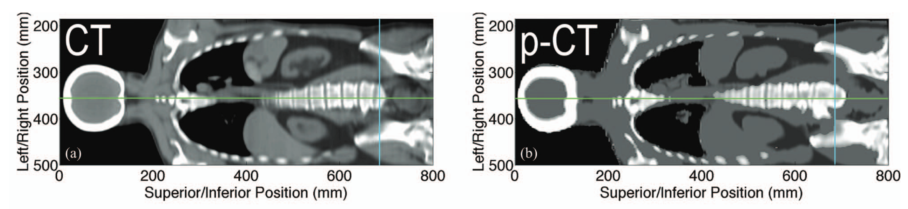
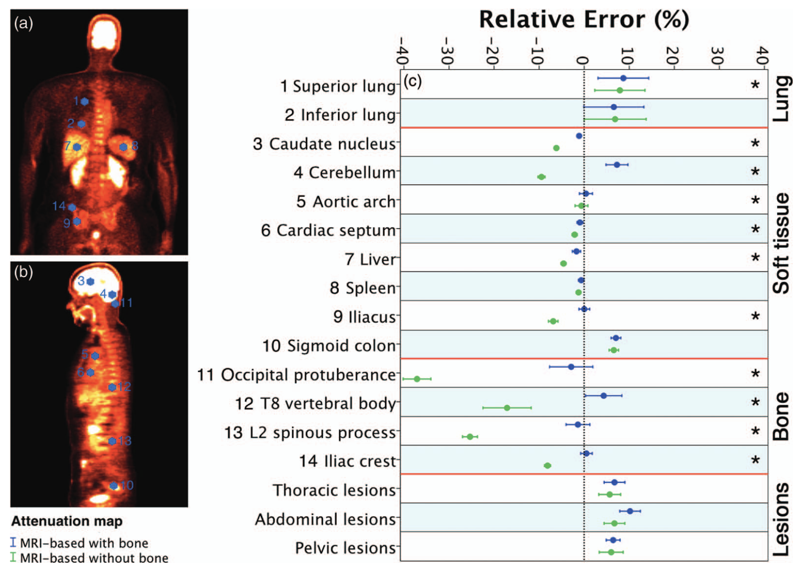

PET/MRI Attenuaton Correction
Overview
This work formed the core of my PhD research and focused on improving MRI-based attenuation correction (AC) for hybrid PET/MRI and SPECT/MRI systems. Because MRI does not directly encode tissue density, generating accurate attenuation maps (μ-maps) from MR images is a significant challenge—particularly for tissues like lung and cortical bone that exhibit low or no signal on conventional MRI.
My research began by evaluating whether MR-based AC performed more reliably in PET or SPECT. Using phantom and animal data, I found that SPECT reconstructions were more robust to inaccuracies in MR-based μ-maps than PET, suggesting that methods developed for PET/MRI might perform even better in emerging SPECT/MRI systems.
I then turned my focus to the lungs—an especially problematic region for PET quantification due to their low MR signal and variable internal density. By establishing a relationship (or mapping) between MR signal intensity and CT-derived μ-coefficients, I developed a method to generate patient-specific lung μ-maps, improving accuracy over conventional segmentation-based approaches that assume uniform lung density.
The final stage of my work addressed the challenge of incorporating bone, which is often invisible on standard MR sequences but contributes substantially to photon attenuation. I used a deformable registration approach to align patient MRIs with a CT atlas, enabling bone to be added to MR-based μ-maps and significantly improving PET quantification in and around skeletal structures.
Quantitatively accurate PET in PET/MRI is essential for reliable oncologic imaging—both for initial staging and for assessing treatment response. This work helped define early strategies for MR-based μ-map generation and demonstrated that a hybrid of segmentation, mapping, and registration can achieve more accurate PET/MRI quantification than traditional approaches.
Publications
-
A comparison of MR-based attenuation correction in PET versus SPECT
Phys Med Biol, 2011
This study evaluated whether MR-based attenuation correction algorithms developed for PET can be applied to SPECT. Using phantom and canine imaging, it found that MR-based AC yielded more accurate and robust reconstructions in SPECT than PET, supporting the feasibility of MR-based SPECT attenuation correction.
-
Variable lung density consideration in attenuation correction of whole-body PET/MRI
J Nucl Med, 2012
This study developed a method to infer patient-specific lung density from MRI for use in attenuation correction, and demonstrated that it significantly improves PET quantification accuracy in the lungs and adjacent tissues compared to conventional constant-density approaches.
-
Description and assessment of a registration-based approach to include bones for attenuation correction of whole-body PET/MRI
Med Phys, 2013
This study introduced a method to improve PET/MRI attenuation correction by adding bone information from a matched CT atlas via deformable registration. Incorporating bone significantly reduced PET quantification error in and around bony structures, without introducing clinically significant changes elsewhere in the image (Figure 1).
The full thesis is available through Western University’s electronic thesis repository.
Figure 1: Adding bone to MRI-based μ-maps reduced PET quantification errors in bone while preserving accuracy in other tissues.
Impact
The strategies developed during this project remain relevant today, as the field continues to explore deep learning–based image synthesis and the expanding clinical role of PET/MRI in oncology.
On a personal level, this project laid the foundation for many aspects of my future work. It sparked my interest in image processing and machine learning, and helped me develop the technical skills needed to work at the interface of imaging, software, and science. More importantly, it immersed me in the discipline of scientific research — from rigorous experimental design to collaborative problem-solving with engineers and physicists — and showed me how thoughtfully designed methods can make imaging more accurate, reproducible, and clinically meaningful.